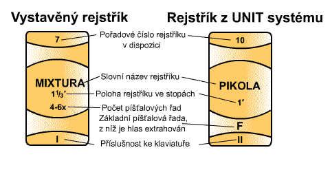
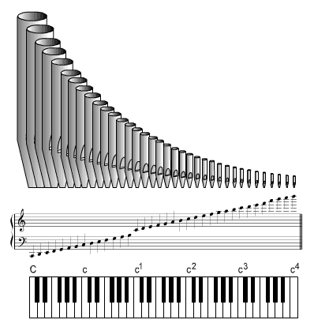

Varhanní hlas (rejstřík) je řada píšťal, uspořádaných odpovídajícím způsobem (nejčastěji v půltónové stupnici), které mají shodnou barvu a další parametry (hlasitost) zvuku. Někdy se setkáme s definicí, vycházející ze shodného tvaru a konstrukce píšťal. Ta není zcela přesná, píšťaly hlubokých či naopak velmi vysokých tónů mohou mít z různých důvodů tvar, materiál i konstrukci odlišnou od zbývajících, přesto (nebo právě proto) budou znít stejně. Považujme tedy za rozhodující kritérium pro označení rejstříku shodný zvuk – tedy to, co slyšíme, ne to, co vidíme… Zvuk rejstříku (především jeho barva tj. obsah harmonických) je bezprostředně svázán s jeho názvem, který většinou vychází z názvu hudebního nástroje (flétna, viola, pozoun, fagot) či napodobení (imitace) nějakého zvukového jevu (Vox Humana - lidský hlas, Unda Maris – mořská vlna), který rejstřík svým zvukem nejvíce připomíná. Tyto názvy pak slouží jako vodítko k registraci pro varhaníka (předem může přibližně odhadnout, jaký zvuk lze od určitého rejstříku očekávat). Přesto prakticky neexistují rejstříky se zcela stejným zvukem u různých varhan, na skutečný zvuk má vliv mnoho parametrů (období vzniku varhan, vkus a zkušenosti varhanáře a intonéra, prostor, ve kterém nástroj stojí, použité materiály atd.). Varhanní hlasy můžeme rozdělit podle mnoha kriterií, to nejzákladnější
je dělení podle konstrukce píšťal (způsobu generování
zvuku) na retné (labiální) a jazýčkové
(linguální). Podle příslušnosti ke klaviaturám můžeme
hlasy rozdělit na manuálové a pedálové
(u varhan s transmisemi – UNIT toto dělení nemusí mít význam). Další
dělení je na hlasy vybudované (každá píšťala přísluší
jediné klávese v manuálu či pedálu) a hlasy s transmisemi a
extenzemi (píšťala přísluší více klávesám v různých manuálech
či pedálu, v případě transmise do pedálu se to týká jen ohraničeného
počtu píšťal – kláves pedálu je méně, transmitovaný hlas má zpravidla
svůj samostatný název i když používá píšťaly jiného hlasu). Samostatnou
kapitolou jsou hlasy v multiplexních varhanách. |
Jednotlivé varhanní hlasy jsou označeny na ovládacím prvku rejstříku (sklopce či manubriu na hracím stole). Samotné označení má dvě až pět částí:
Kompletní názvy rejstříků pak mohou vypadat např. takto: Burdon 16’, Principál 8’,
Oktáva 4’, Mixtura 2 2/3’ 4x. Na
obrázku je srovnání běžného vzhledu popisu sklopek pro varhany s vystavěnými
rejstříky a pro varhany s UNIT systémem: |

Rozlišení rejstříků podle názvu je základní, používaných
názvů je až několik stovek či tisíc. Mnohé se víceméně kryjí (liší se
u totožného rejstříku v různých regionech, např. německé, italské či francouzské
značení, odlišnosti jsou i varhan z různých období - barokní, romantické
či soudobé apod.). Popis vlastností těch základních (u nás nejrozšířenějších)
je uveden v samostatné kapitole, další podrobné informace až o 2500 rejstřících
najdete např. v encyklopedii
varhanních hlasů na Internetu. |
Číselné označení polohy nás informuje, zda hlas transponuje a pokud ano, tak o jaký interval vůči základní poloze. Vyjděme ze základního zobrazení varhanní klaviatury v rozsahu pěti oktáv (61 kláves od velkého C po čtyřčárkované c4). Přiřadíme-li každé klávese píšťalu, která bude znít na odpovídajícím tónu, získáme řadu píšťal od nejdelší (odpovídající nejhlubšímu tónu tedy C) po nejmenší (nejvyšší tón c4). |

Osmistopových rejstříků může být ve varhanách více
(především v romantických nástrojích je jich naprostá většina na úkor
alikvotů), liší se od sebe názvy (a tedy především barvou či silou zvuku).
Výška základního tónu je však u všech shodná, stiskneme-li tedy např.
klávesu c1 při více zapnutých osmistopových rejstřících, zazní
ve všech píšťaly c1: |
Na rozdíl od klavíru či piána však varhanní klaviatura
nemá pevně přiřazenou tónovou stupnici, která by umožňovala použití jen
netransponujících hlasů v základní poloze. Ve varhanách se vyskytují i
hlasy transponující, u kterých stisk klávesy rozezní
píšťalu s jiným tónem, než by odpovídal klávese. Hlasy v základní poloze
(osmistopové) i transponující jsou většinou jednořadé – na každé klávese
v každém hlase je jen jedna píšťala. Dělíme je na:
Kromě jednořadých hlasů jsou ve varhanách i rejstříky víceřadé (sborové, vícesborové), u nichž na každé klávese zní několik (2 až 7) píšťal naladěných na různé tóny současně. |
Jak bylo uvedeno výše, označování polohy rejstříku
ve stopové délce udává výšku tónu a je odvozeno od délky nejdelší píšťaly
(tedy píšťaly velkého C) ve stopách (1 stopa má asi 30,5cm). U rejstříků
v jiné než základní poloze se opět vychází z délky píšťaly, která přísluší
klávese velké C (ne tedy z délky píšťaly, která zní tónem velké C, to
bychom dostali vždy 8’…). U těchto rejstříků klávese C přísluší píšťala,
vydávající zvuk jiné výšky (stejně tak je tomu samozřejmě i u všech ostatních
tónů). Tyto závislosti však platí jen pro píšťaly otevřené konstrukce,
u píšťal krytých je konstrukční délka těla píšťaly poloviční, přesto vydává
tón stejné výšky jako dvakrát větší píšťala otevřená. Takový rejstřík
přesto bude označen stopovou délkou otevřeného rejstříku, rozhodující
je totiž výška tónu a ne skutečná konstrukční délka. Opačný problém nastává
u přefukujících píšťal (díky přebytku vzduchu tyto píšťaly přefukují –
jejich zvuk přeskočí základní tón např. o oktávu výše), ty jsou zase konstrukčně
až dvakrát delší, než by odpovídalo jejich zvuku. Zde je opět základním
kritériem pro označení výška tónu, ne skutečná délka. |
V dalších kapitolách je rozebráno označování hlavních, vedlejších a smíšených hlasů. S problematikou souvisí rovněž úvod do akustiky, princip vzniku zvuku v píšťalách retných a jazýčkových, stavba píšťal, menzury, intonace a ladění. |
Poznámka: Tato stránka je součástí Anatomie varhan ®, © Ing. Petr Bernat. Část ilustrací © Konrad Zacharski,